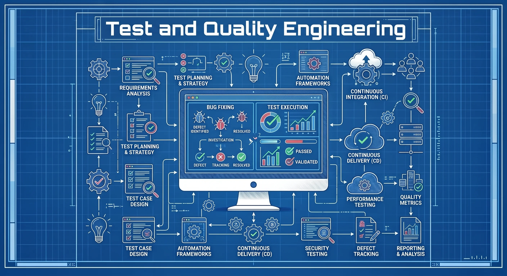
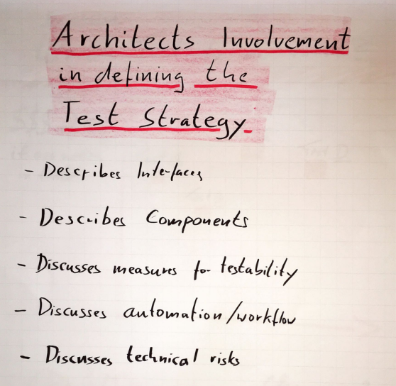
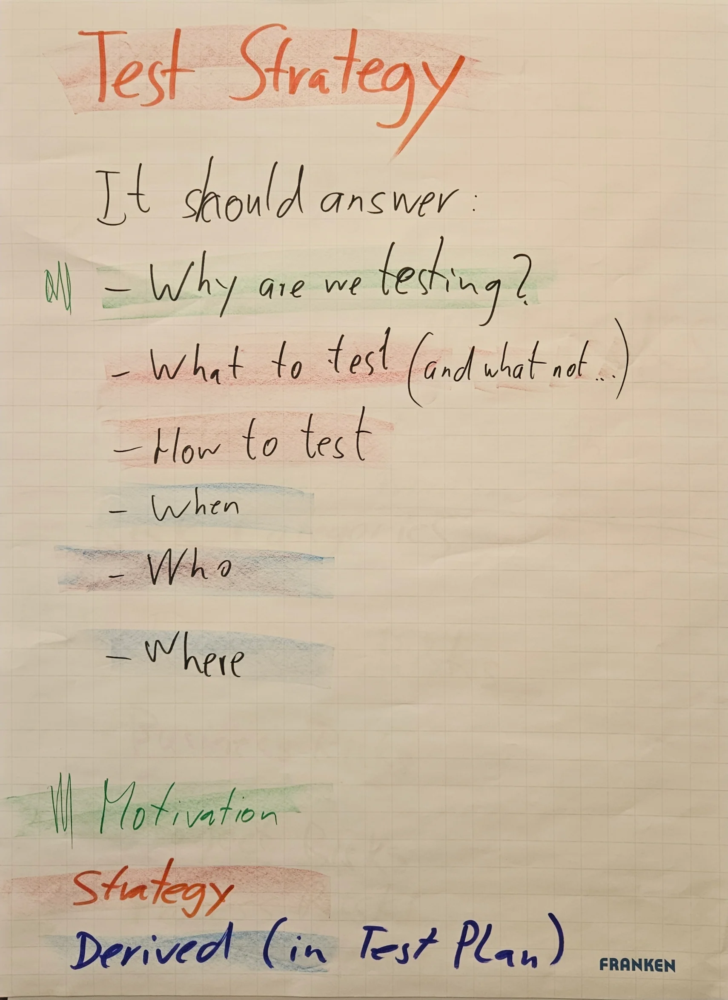

Software Testing and Quality
#Brief Topic Summary
Software quality and its systematic testing represent fundamental pillars of software engineering and architecture. In modern complex systems, especially in the areas of embedded software, safety-critical systems, or industrial automation, quality cannot be perceived merely as a phase at the end of the development cycle. Quality must be built into the system from the design and architecture level onward. Testing serves as an empirical investigation of the system with the aim of providing stakeholders with objective information about the state of quality and risks. Close cooperation between the software architect and the test manager is essential for establishing an effective test strategy that minimizes unnecessary costs of correcting defects in later project phases.
Software Quality Management is not a one-time activity, but a comprehensive discipline that runs throughout the entire software development life cycle (SDLC). For the software architect and test architect, it is essential to understand that quality cannot be "tested into" a system at the end of development. Quality must be designed into the system (built proactively) through architectural tactics and process discipline, while testing serves as a critical mechanism for verifying compliance with requirements and validating that the end user's needs are met.

#Definitions and Basic Concepts
#A. Software Quality (Software Quality)
- Definition: Conformance to requirements (compliance with specified requirements) or fitness for use (suitability for use and the ability to satisfy both explicit and implicit customer needs). Quality is divided into functional quality (compliance with functional requirements) and structural quality (internal properties such as maintainability, efficiency, and security).
- Significance in architecture: The architect defines quality through non-functional requirements (NFR, known as quality attributes or "-ilities") and the selection of architectural tactics to achieve them.
- Significance in testing: Testing provides objective metrics and an assessment of the extent to which the system fulfills these described quality attributes.
- Typical examination misunderstanding: Reducing quality solely to the technical correctness of the code (removing bugs). A system that is technically perfect but does not meet the user's business needs has almost zero quality .
- Practical example: In embedded software for automotive applications (for example, a brake control unit), a non-functional requirement (NFR) for quality is a guaranteed response time (timing) below 5 ms under all circumstances.
#B. Quality Assurance (QA) vs. Quality Control (QC) vs. Software Testing
- Definition:
- Quality Assurance (QA): A preventive and process-oriented activity. It focuses on establishing, auditing, and continuously improving development processes to prevent defects.
- Quality Control (QC): A corrective and product-oriented activity. It includes reviewing the finished product before release to verify its compliance with the specification.
- Software Testing: The technical and dynamic implementation of defect detection directly in the code by executing it under controlled conditions.
- Significance in architecture: The architect participates in QA by defining coding standards and design guidelines. As part of QC, the architect reviews the architectural design against the requirements.
- Significance in testing: Testing falls under QC and provides empirical data that serves as feedback for QA processes to optimize the entire SDLC.
- Typical examination misunderstanding: Using the term "QA engineer" for a tester who only clicks through scenarios or writes integration tests. A tester detects existing defects (QC), whereas QA seeks to use processes to ensure that these defects do not arise in the first place.
- Practical example: QA is the introduction of a mandatory static code analyzer (for example, PolySpace or QAC) into the CI pipeline. QC is the final test drive of the integrated vehicle. Testing is the actual execution of test scripts that simulate sensor inputs on a HIL (Hardware-in-the-Loop) simulator.
#C. Verification (Verification) vs. Validation (Validation)
- Definition:
- Verification: "Checking whether we have built the product correctly" (Are we building the product right?). This concerns compliance with the specification and technical requirements.
- Validation: "Checking whether we have built the right product" (Are we building the right product?). This concerns meeting the user's actual needs and the business purpose in the real environment.
- Significance in architecture: The architect needs to verify that the implementation corresponds precisely to the detailed design (LLD) and interfaces, and to validate that the architecture as a whole solves the customer's real problems.
- Significance in testing: Verification tests are typically low-level (Unit, Integration) and check compliance with the technical specification. Validation is performed through acceptance tests (UAT, Alpha/Beta) with end users.
- Typical examination misunderstanding: Assuming that if a system has passed 100% verification (all tests against the specification have passed), it is automatically valid. If the specification itself was incorrect or misunderstood, verification succeeds but validation fails (see the case of the Hubble telescope).
#D. Software Testability (Software Testability)
- Definition: The extent (degree of effectiveness and efficiency) to which a software artifact allows test criteria to be established and tests to be performed to verify their fulfillment in a given context. Practical testability expresses how easily a product can be tested by a particular tester and process.
- Significance in architecture: Testability is a key non-functional requirement (NFR). If a system lacks testability, the architecture becomes unmaintainable, and technical debt and regression risks increase.
- Significance in testing: High testability directly reduces the time, effort, and cost of preparing and executing tests, and improves fault localizability.
- Typical examination misunderstanding: Measuring testability solely through the Code Coverage metric. High code coverage does not mean that the code is easily testable or that the architecture allows easy isolation of modules.
- Practical example: If an industrial PLC system does not allow power failures or bus errors to be simulated through software (controllability), its testability is low and the tester must induce faults by manually disconnecting cables.
#E. Design for Testability (Design for Testability - DFT)
- Definition: The proactive application of design principles, tactics, and patterns to maximize system testability from the very beginning of design.
- Significance in architecture: The architect applies tactics such as separating dependencies (Dependency Injection), encapsulating external interfaces, introducing Control & Observation Points, or using patterns such as Humble Object.
- Significance in testing: It enables the introduction of test Drivers, simulators, stubs, and mock objects, minimizing the need to test everything on expensive final hardware.
- Typical examination misunderstanding: The view that DFT is a matter for developers at the unit test level. DFT must begin at the system architecture level by dividing the system into independently testable components.
#Test Strategy (Test Strategy)
A test strategy is a high-level document that defines the general approach and methodology for software testing. It aims to establish a cross-cutting approach to software testing within an organization, identify priorities, and determine the expected level of quality. It primarily documents how testing will be performed, including the use of systematic testing methods and risk-based testing strategies. It tends to be relatively static, meaning that once approved, it rarely changes during the life cycle. For example, it defines the incorporation of test design techniques into individual testing levels, the definition of testing methods for requirements, and the criteria for entering and exiting testing. It is usually designed by a Test Architect or Test Manager.

#Test Plan (Test Plan)
A test plan is a detailed document specifying the scope, approach, resources, and schedule of the intended testing activities for a particular project, iteration, or release. It is one of the documents produced from the test strategy. While the strategy is general, the plan is very specific and answers the questions of what will be tested, who will test it, and when testing will take place. It is a dynamic document that can be updated during software development in response to changes in requirements, delays, or newly discovered project risks. For example, it defines the assignment of specific testers, the test execution schedule, and specific project milestones.
| Criterion | Test Strategy (Test Strategy) | Test Plan (Test Plan) |
|---|---|---|
| Purpose | Defines the general cross-cutting approach, methodology, and standards for testing. | Defines the testing specifics for a particular project or phase (who, what, when). |
| Level of detail | High-level (high level), often applicable across multiple projects within the organization. | Low-level (detailed level), applicable to one particular project or sprint. |
| Dynamics | Static – rarely changes after approval. | Dynamic – regularly updated according to the current progress of the project. |
| Key components | Expected level of quality, testing levels, testing techniques, entry/exit criteria. | Features to be tested and not tested, schedule, resource allocation, testing environment for the given release. |
| Owner/Author | Test Architect or Test Manager. | Test Lead or QA Manager. |
| Dependency | Exists independently and establishes an overarching framework. | Is based on the test strategy and serves as its output document for specific needs. |

The background coloring visually identifies the key differences between the test strategy and the test plan.
#Seven Principles of Software Testing
In the examination, it is necessary not only to list these principles, but also to demonstrate a deep understanding of them in the context of architecture and test strategy:
- Testing shows the presence of defects, not their absence (Testing shows the presence of defects): Testing can demonstrate that defects are present in a system, but it cannot prove that none remain. Architectural implication: The system must be designed to be fault-tolerant (resistant to faults), because it must be assumed that some defects will make it into production.
- Complete (exhaustive) testing is impossible (Exhaustive testing is impossible): Testing all combinations of inputs, paths, and conditions is unrealistic because of limited time and budget. Architectural implication: Prioritization based on risk analysis (Risk-Based Testing) must be defined, with a focus on the most critical scenarios.
- Early testing (Early testing): Testing activities (especially static testing and requirements reviews) should begin as early as possible in the SDLC. Fixing a defect discovered in the requirements costs orders of magnitude less than fixing the same defect discovered only after the software has been released.
- Defect clustering (Defect clustering): Approximately 80% of defects are found in 20% of modules (an application of the Pareto principle). The cause is often high code complexity or tight coupling between components. Architectural response: Modules with high defect rates must undergo refactoring to reduce complexity and increase modularity.
- The pesticide paradox (Pesticide paradox): Repeatedly running the same test suite eventually stops revealing new defects. Developers subconsciously write code so that existing tests pass. Strategic response: Tests and test scenarios must be regularly reviewed, varied, and supplemented with exploratory testing.
- Testing is context-dependent (Testing is context-dependent): There is no universal test strategy. An online shop is tested differently from railway traffic control software. Architectural response: The architecture of the testing environment and tools must directly reflect the domain's specific characteristics (for example, the need to simulate real time, hardware failures, and similar conditions).
- The absence of errors fallacy (Absence of errors fallacy): Finding and fixing all defects does not help if the system does not meet user needs or support business objectives. Architectural response: The architect must actively participate in validating requirements directly with the commissioning stakeholders.
#Common Mistakes and Anti-Patterns
The following table describes key mistakes encountered across projects:
| Anti-pattern / Mistake | Why Is It a Problem? | How Does It Manifest? | How Can It Be Prevented / Resolved? |
|---|---|---|---|
| Monolithic test automation without DFT | Tests are fragile, slow, and dependent on a specific graphical user interface (GUI). | Every minor code change causes widespread test failures (fragile tests). Defect detection is slow. | Implement the Humble Object pattern – separate the presentation layer from the business logic, which can be tested in isolation. |
| Ice Cream Cone Pattern (Inverted Pyramid) | Most tests are implemented at the GUI/E2E level, while there are very few unit tests. | Test runs take hours, failure analysis is extremely time-consuming, and tests are unstable (flickering). | Transform the test strategy toward the Testing Pyramid or Testing Trophy. |
| Insufficient isolation of dependencies in unit tests | Unit tests access the real database, network, or hardware. | Slow tests that cannot be run locally without the complete infrastructure. Tests often fail because of environment errors. | Use Dependency Injection techniques and replace external dependencies with test doubles (Stubs, Mocks, Fakes). |
| Ignoring testability when defining requirements | Requirements are vague and precise test criteria cannot be designed for them. | Disputes during system acceptance, inability to automate, and an unclear testing scope. | Introduce the practice of BDD (Behavior-Driven Development) – defining requirements in the form of executable specifications (Given-When-Then). |
| Absence of testing for negative conditions and error handling | Only the so-called happy path (optimal course of events) is tested. | When faced with unexpected input or hardware failure, the system crashes, freezes, or exhibits undefined behavior in production. | Use techniques such as Fault Injection (injecting faults) at both the architecture and testing levels. |
#Examination Questions
Examiners often ask about deeper connections. Here is an overview of questions divided by difficulty:
#A. Basic Questions
- What is the difference between static and dynamic testing?
- Static testing does not require code execution (documentation reviews, code reviews, static analysis). Dynamic testing requires executing the code with specific inputs and comparing the result with the expected output. The two methods complement each other.
- What is a Test Case, and what are its key elements?
- A set of input values, prerequisites (execution preconditions), expected results, and postconditions developed for a specific objective (for example, covering a path through the code).
- How would you define the difference between QA, QC, and software testing?
- QA is process-focused defect prevention. QC is the detection of deviations in the final product before release. Testing is the dynamic execution of code to find defects.
- Explain the difference between verification and validation.
- Verification: compliance with the specification (Are we building the product right?). Validation: compliance with user needs in the real environment (Are we building the right product?).
#B. Intermediate Questions
- Explain the difference between Testing Pyramid and Testing Trophy.
- Testing Pyramid (Cohn) recommends a broad base of fast and inexpensive unit tests, fewer integration tests, and a minimum of E2E/UI tests. Testing Trophy (Kent C. Dodds) places the greatest emphasis on integration tests and static analysis, because they provide the best balance between cost, speed, and the level of confidence for modern web/distributed applications.
- How are the Cyclomatic Complexity of code and testing related?
- Cyclomatic complexity determines the number of linearly independent paths through the code. It directly defines the minimum number of test cases required to achieve 100% Decision Coverage. High complexity indicates poorer testability and a higher risk of defects.
- What is the "Pesticide Paradox" in testing, and how do you counter it as a test architect?
- The pesticide paradox states that repeatedly running the same tests eventually stops finding new defects. The response consists of regular review, updating tests, writing new test scenarios, and incorporating exploratory testing.
- Explain the Pareto principle in the context of software defect rates.
- The concept of Defect Clustering – approximately 80% of defects are found in 20% of modules. Knowledge of these critical modules helps optimize the allocation of testing resources based on risk.
#C. Advanced Questions
- How are Dijkstra's statement about testing and the "absence-of-errors fallacy" (Absence-of-errors fallacy) related?
- Dijkstra points out that testing can never prove 100% freedom from defects. The absence of errors fallacy adds that even if a system were technically completely defect-free, it would be a failure if it did not meet the user's actual business needs.
- Which architectural patterns (Design Patterns) directly support testability at the code level?
- Dependency Injection (DI) to allow the substitution of Test Doubles (Stubs/Mocks), Humble Object to separate complex business logic from a difficult-to-test framework/GUI, and Dependency Inversion to eliminate cyclic dependencies.
- How can a software architect improve observability in a distributed microservices system to facilitate testing and diagnostics?
- By implementing patterns and tactics such as centralized logging with unique correlation IDs (Correlation ID) propagated across services, introducing standardized health checks and monitoring endpoints, and using tracing (for example, OpenTelemetry).
- Describe the Humble Object pattern and its use in testing systems with a graphical interface.
- The Humble Object pattern extracts all complex business and presentation logic from a component that is difficult to test (for example, a GUI window or mobile view) into a simple, clean class (Presenter/ViewModel). The GUI itself remains "dumb" (humble), contains no logic, and does not need to be tested with complex GUI tests.
#D. Practical Experience and Trade-Off Decision Questions
- We have limited budget and time. We must decide whether to invest in refactoring to improve the testability of older (legacy) code, or instead write more integration tests over the existing system. How would you decide?
- The decision depends on the business plans for the module in question. If it is a stable module with a low frequency of changes, refactoring would be uneconomical; it is better to cover it at the surface with integration tests (Subcutaneous Tests). If it is a module with a high frequency of changes and a high defect rate (defect cluster), refactoring is necessary to maintain development speed and stability in the long term.
- How do you resolve the conflict between testability and Encapsulation?
- Exposing a component's internal state for testing purposes (for example, through reflection, friend classes in C++, or package/internal modifiers) weakens encapsulation. The solution is to design dedicated Testability Interfaces that are active only in debug/test builds.
- How does code instrumentation for testing purposes (for example, coverage measurement or trace logs) affect systems operating in real time (Real-Time Safety-Critical)?
- Instrumentation introduces additional instructions (tracers) into the code, which changes the system's timing behavior (the Heisenbug effect). The architect must account for performance overhead and also validate the system's behavior using the final production code without instrumentation.
#Model Examination Answer
*(The following text presents a continuous, professionally structured speech suitable as an answer to the question: "What is the significance of testing, testability, and quality in software architecture?")*
Software quality cannot be viewed as a property that can be 'tested into' a system afterwards at the end of a project. Quality is a system attribute that must be proactively designed and managed throughout the entire life cycle.
From the perspective of software architecture, a key concept is testability (testability). We define testability as the ability of a system to allow efficient and rapid verification of whether it meets the established criteria. If the architecture is untestable, maintenance costs rise rapidly, feedback slows down, and the project enters a spiral of technical debt.
As architects, we must actively design for testability using specific architectural tactics and patterns. The most important include:
- Reducing Coupling through Dependency Injection: This allows us to isolate the component under test and replace its production dependencies (for example, a database or hardware) with test doubles (Stubs, Mocks).
- Ensuring Controllability and Observability: We must design dedicated testing interfaces, Test Hooks, or enhanced logging and tracing capabilities into the system so that we can bring it into the required state and reliably verify its internal behavior.
Let us consider an example from embedded safety-critical software, specifically the control of an industrial robotic arm. If we designed an architecture in which the path-planning logic was tightly coupled to the drivers of physical motors and safety sensors, we would have no way to test the path algorithms without real hardware. This would mean an extreme risk of property damage or injury during development. The correct architectural decision here is to introduce a hardware abstraction layer (HAL) and encapsulate the sensors behind clearly defined interfaces. This allows us to run the complete path-planning logic in a simulated environment (for example, at the level of software integration SIL – Software-in-the-Loop).
When designing the test strategy, we naturally encounter trade-off decisions. Improving testability often requires the introduction of additional abstractions and interfaces, which can slightly increase code complexity and, in embedded systems, processor overhead (runtime overhead). Nevertheless, this trade-off is almost always offset by a dramatic reduction in the time needed to localize faults, faster development, and minimized risks of production failures.
In conclusion, I would like to emphasize that the architect's role is not to write the tests themselves, but to create an architecture that makes testing possible in the first place. The architect must work closely with the test manager to define Entry/Exit Criteria for individual testing levels and ensure that, from day one, the system is designed with an awareness of how it will be verified."
#Short Version for Quick Review (Cheat Sheet)
Main points:
- Quality cannot be 'tested into' software afterwards; it must be designed as part of the architecture.
- Verification checks compliance with the specification; Validation checks suitability for real-world use.
- Testability (testability) is a critical non-functional requirement (NFR) that reduces development and maintenance costs.
- Design for Testability (DFT) uses patterns such as Dependency Injection, Humble Object, or HAL to isolate components.
- The testing pyramid (fast & cheap unit tests at the base) must be prioritized over expensive GUI tests.
- QA is process-based prevention; QC is product conformity control; Testing is the dynamic detection of defects in code.
- Test Strategy (Strategy) defines the organization-approved, project-independent technological direction, principles, and methodology of testing.
- Test Plan (Plan) is an operational and specific document that allocates people, time, and hardware, and defines the precise testing scope for a particular project.
Key concepts:
- Quality Assurance (QA): Control and continuous improvement of development processes to prevent defects from arising.
- Testability: The degree of ease with which test criteria can be established and tests performed.
- Controllability & Observability: Architectural properties that determine the ability to control inputs/states and observe outputs/internal system states.
- Verification vs. Validation: "Building the product right" versus "Building the right product".
- Defect Clustering: The concentration of 80% of defects in 20% of modules (Pareto principle).
- Pesticide Paradox: The need to vary tests regularly to find new defects.
- Test Strategy: A long-term framework that determines test types, methodologies, and the architecture of the testing system.
- Test Plan: A project plan describing the scope, schedule, resources, and test success criteria.
4 most common mistakes:
- Neglecting testability in the early design phases (DFT is addressed only when there is pressure to automate).
- Blindly targeting 100% Code Coverage regardless of the actual value and quality of test scenarios.
- Confusing Verification (fulfillment of the specification) with Validation (fulfillment of actual user needs).
- Designing a system without control and observation interfaces, leading to unstable GUI-based tests.
Model sentence for use in the examination:
"As a software architect, I regard testability as a key system quality attribute because an untestable architecture is unmaintainable and economically unjustifiable in the long term."
"While the Test Strategy lays an independent technological and architectural foundation for how we verify quality across the organization, the Test Plan is our operational roadmap that applies these principles to the specific milestones, resources, and risks of the given project."
#Learning Outcome (Connection to LOPO)
This overview fully covers the requirements of the Learning and practice outcomes (LOPO) document:
- Connection to testing levels for architects: It discusses the significance of low-level (SWE.4 Unit, SWE.5 Integration) and high-level (SWE.6 Validation, System) tests in the context of architecture and their effect on detecting defects.
- Application of Testing Pyramid vs. Testing Trophy: It analyzes in detail the distribution of testing effort, feedback speed, and the economic aspects of both approaches.
- Implementation of the "testability" quality at multiple levels: The overview defines specific tactics and design patterns (DI, Humble Object, control and observation points) for both the system and code levels.
#Summary in a Single Table
| Area | What Is Important | Relationship to Architecture | Relationship to Testing | Typical Examination Question |
|---|---|---|---|---|
| Software Quality | Conformance & Fitness for use. Balancing functional and non-functional requirements (NFR). | The architect designs the system to meet quality attributes (NFR). | Testing provides objective feedback on the quality achieved by the system. | How do you define software quality, and why is technical freedom from defects alone insufficient? |
| QA vs. QC vs. Testing | QA is process-based prevention. QC is product verification. Testing is the detection of defects in code. | The architect co-creates QA standards and processes ( guidelines, coding). | Testing performs QC defect detection on the running system. | Explain the difference between Quality Assurance and Quality Control using a specific example. |
| Verification vs. Validation | Checking compliance with the specification (verification) vs. checking that user needs are met (validation). | The architect verifies the design against requirements and validates business decisions. | Verification is performed through unit/integration tests; Validation through acceptance tests with users. | Can verification succeed (100% of tests passed) while validation still fails? |
| Testability (Testability) | Effectiveness and efficiency of testing. Heuristics: Observability, Controllability, Simplicity. | Testability is a key NFR affecting maintainability and technical debt. | High testability facilitates automation and accelerates defect detection and localization. | What are Control and Observation Points, and how do they affect system testability? |
| Design for Testability (DFT) | Proactive application of patterns and tactics (Dependency Injection, Humble Object, HAL). | The architect designs interfaces and components with their potential isolation in mind. | Enables the use of Test Stubs/Mocks for fast and stable testing without real dependencies. | Describe how the Dependency Injection pattern contributes to better system testability. |